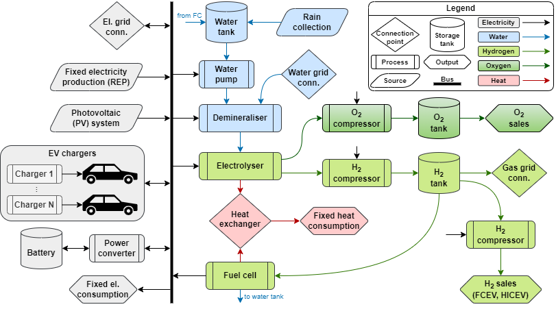

Danube Indeet Model
Preface
This is the documentation for version 0.3.10. (Version history). For download link and other useful information see the main model website.
This user manual introduces the Danube Indeet Model (DIM), a practical and user-friendly solution for planning and sizing investments in integrated energy and transport hubs based on renewable energy. The tool enables users to evaluate how locally available or imported renewable energy can be optimally used to charge EVs and/or to be converted into green hydrogen, while also efficiently integrated with electricity, gas, heating, and water networks.

The DIM delivers techno-economic insights, including optimal system configuration, CAPEX/OPEX estimates, and key financial indicators such as NPV, IRR, and ROI. Designed for municipalities, energy planners, development agencies, and investors, the DIM supports informed, data-driven decisions for developing cost-effective and future-ready hydrogen hubs.
Key Features of the DIM:
- 🚗 Flexible EV charging including V2G
- Smart charging of EVs, including vehicle-to-grid, helps to balance the grid.
- 🔋 Green hydrogen focus
- Convert local and regional renewable energy surpluses into clean, versatile hydrogen.
- 🌐 Multi-grid integration
- Seamlessly plan interactions across electricity, gas, heating, and water networks.
- ☀️ Flexible renewable energy input
- Input renewable energy manually, or define local solar PV capacity.
- 🔧 Comprehensive system modelling
- Understand every component and how they interact within the overall system.
- 💰 Techno-economic analysis
- Get CAPEX/OPEX estimates and financial indicators like NPV, IRR, ROI, and payoff period.
- 📊 Optimal sizing & operation
- Receive recommendations for sizing electrolysers, fuel cells, photovoltaics, wind farms, energy storage, and more, plus operation schedules.
- 🖥️ Intuitive graphical interface
- User-friendly GUI for easy input, visualization, and interpretation of results.
- 🔍 Built on proven optimization tools
- Leverages and expands the DanuP-2-Gas Optimization Tool for advanced system planning.
- 👥 Targeted user support
- Designed for municipalities, energy planners, development agencies, and private investors.
- 📈 Scenario analysis capability
- Explore dynamic planning scenarios to optimize infrastructure, investment, and performance.
Acknowledgements
Development of the tool has been funded by:

European Regional Development Fund (ERDF) through project
Integrated and decentralised concept rethinking energy and transport systems based on renewable energy in the Danube region (Danube Indeet)
grant number DRP0200088
The tool is developed and maintained by:
University of Zagreb Faculty of Electrical Engineering and Computing
Department for Control and Computer Engineering
Laboratory for Renewable Energy Systems
Zagreb, Croatia
lares@fer.hr
Further development
To report issues, request changes, ask questions, or provide feedback, email us to:
filip.rukavina@fer.hr; ivan.grabic@fer.hr; marko.kovacevic@fer.hr; mario.vasak@fer.hr,
with indication whether it is about:
A bug – the tool does not operate as it should. Make sure to:
- tell us what you expected to happen,
- tell us what actually happened,
- tell us what version of the DIM you use,
- send us screenshots of the problem,
- send us the project file (.hyefre) where it happens.
A change – you would like to see an improvement, whether it is to change an existing feature or adding a new one. Make sure you explain it in your email and tell us which version of the tool you are currently using.
Questions – just ask if you have questions or need assistance with tool usage.
Documentation – let us know if something is wrong or missing in the documentation.
License
The use and distribution of the software is free under the GPL License, Version 3.0 (the “License”). You may obtain a copy of the License at
https://www.gnu.org/licenses/gpl-3.0.en.html.
Unless required by applicable law or agreed to in writing, software distributed under the License is distributed on an “AS IS” BASIS, WITHOUT WARRANTIES OR CONDITIONS OF ANY KIND, either express or implied. See the License for the specific language governing permissions and limitations under the License.
How to cite
TODO: add article to cite